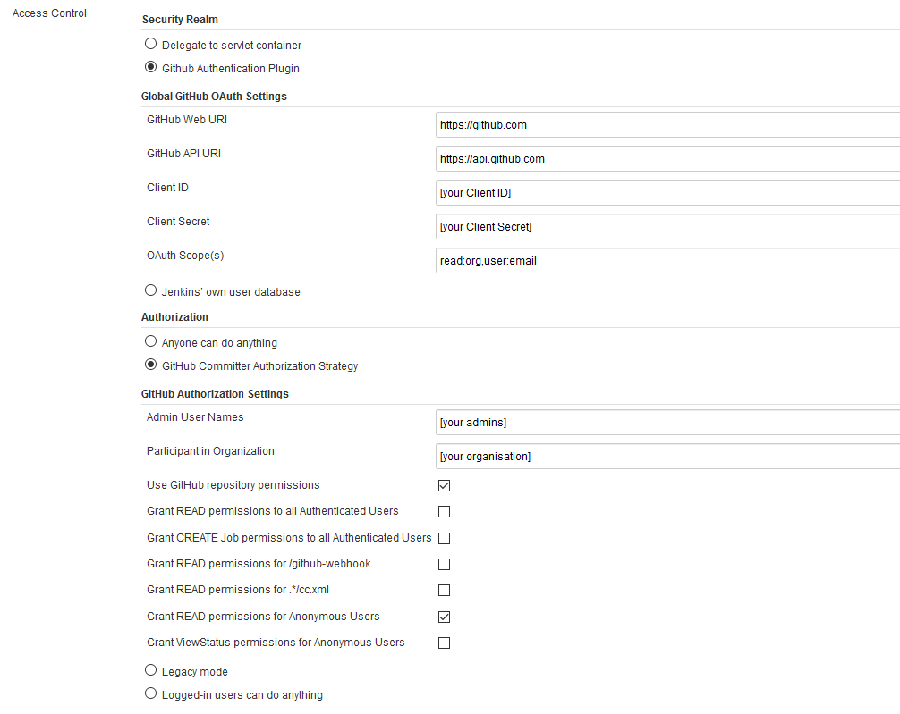

Github Jenkins Integration
Authentication with Github
Following steps are required.
Configuration Github
-
Go to the Github Page and visit https://github.com/settings/applications/new to create a GitHub application registration or in 'settings' - 'OAuth Apps' - 'New OAuth App'. The values for application name, homepage URL, or application description don't matter. They can be customized however desired.
-
However, the authorization callback URL takes a specific value. It must be https://jenkins.example.com/securityRealm/finishLogin where
jenkins.example.com is the location of the Jenkins server. -
The important part of the callback URL is /securityRealm/finishLogin Finish by clicking Register application.
Configuration Jenkins
-
Go to 'manage Jenkins' - 'Configure Global Security' and activate the 'Global GitHub OAuth' Settings
-
Put in your values and credentials as seen in the screenshot 
more Details here: Jenkins wiki